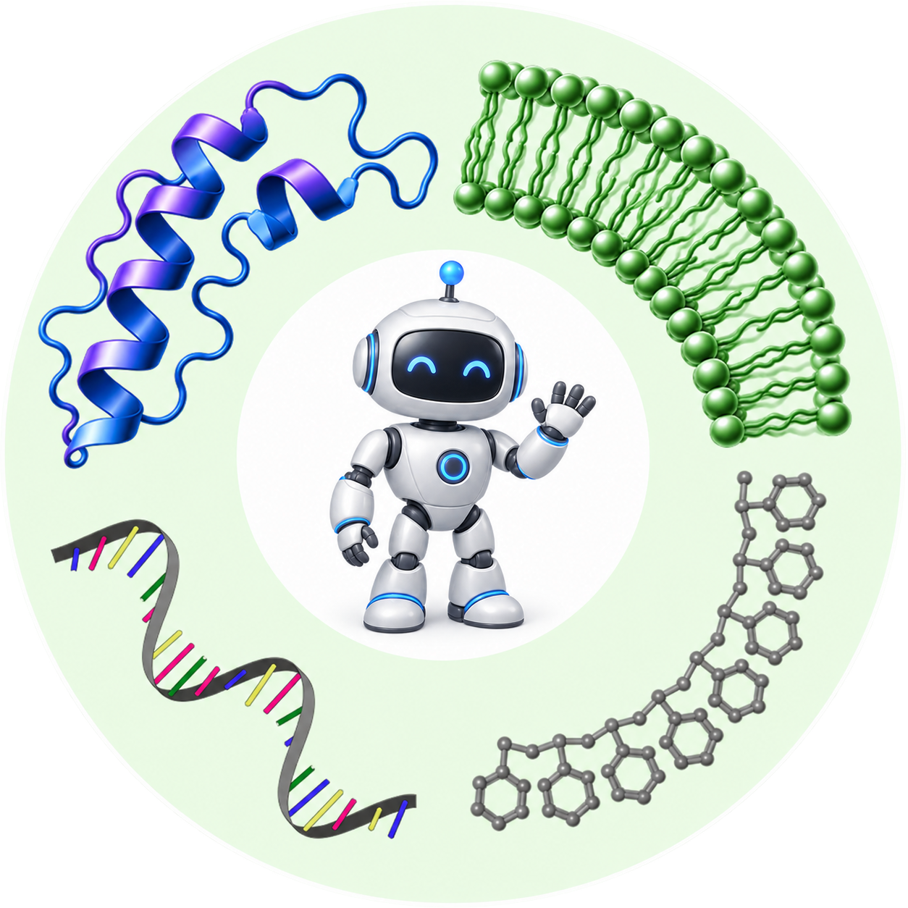

Computing support from OSC
The Shi Group has received computing credits from the Ohio Supercomputer Center (OSC) to support research in AI for polymers and biomacromolecules.
University of Toledo
Physics-informed AI for Polymer and Biomacromolecule Modeling and Design

The Shi Group has received computing credits from the Ohio Supercomputer Center (OSC) to support research in AI for polymers and biomacromolecules.
Prof. Jiale Shi gave a talk titled “Measuring Differences in Protein Allosteric Graphs via Molecular Dynamics Simulations, Graph Theory, and AI” at the 2nd SCBA-Ohio Chapter Annual Scientific Symposium.
Prof. Jiale Shi was scheduled to give a talk at UToledo AI Lightning Talks, hosted by the Department of Electrical Engineering and Computer Science and the Office of Research and Sponsored Programs.
Prof. Jiale Shi officially joined the University of Toledo Department of Chemical Engineering as a tenure-track assistant professor.
Jiale Shi, Zhongyi Wan, Renjie Zhu, Qiang Cui.
2026, 22, 12, 6180–6195.
Jiale Shi, Runzhong Wang, Nathan J. Rebello, Jiarui Lu, Debra J. Audus, Bradley D. Olsen.
2026, 59, 4, 1885–1900.
Physics-informed AI for polymers and biomacromolecules at the University of Toledo.
Meet the team